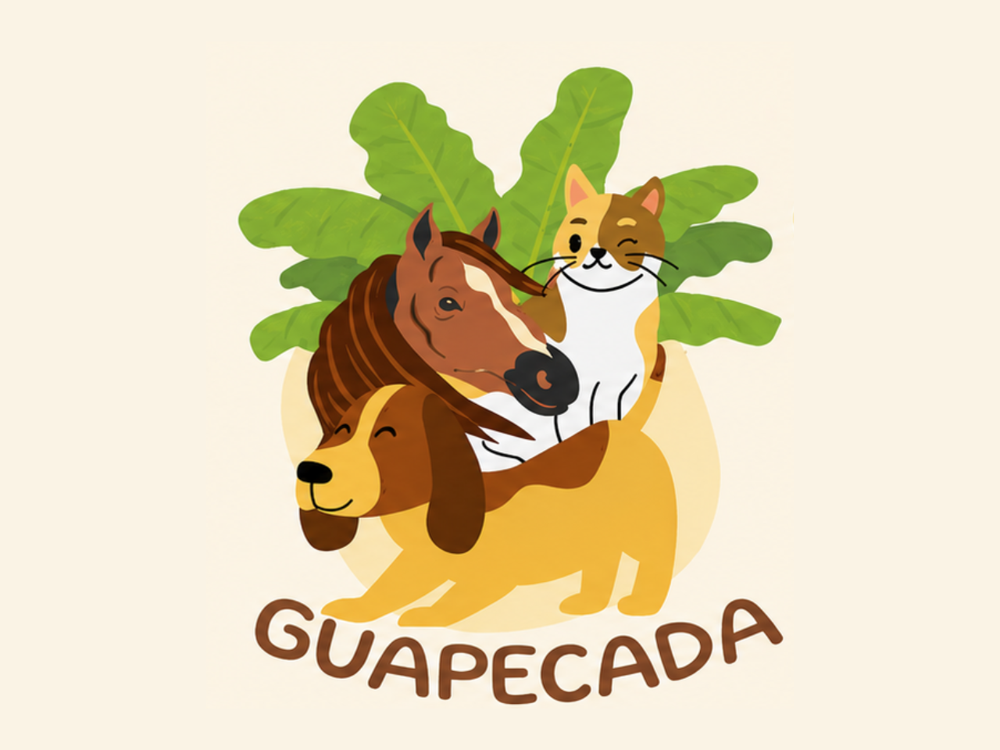

Campanha de arrecadação de suprimentos para animais resgatados. Junte-se a nós e faça a diferença!
Separe itens em bom estado — cada categoria ajuda de um jeito diferente.
Pacotes fechados ou bem vedados, para cães e gatos de todas as idades.
Mantas, toalhas, lençóis e caminhas para aquecer quem mais precisa.
Coleiras, guias e brinquedos que trazem estímulo e alegria.
Shampoos, tapetes higiênicos e medicamentos dentro da validade.
Encontre o ponto de coleta mais próximo e faça sua contribuição.
Caixa identificada logo na entrada, de fácil acesso para todos que passam diariamente.
Caixa localizada próximo ao balcão de atendimento, em um ambiente tranquilo para deixar sua doação.
Acompanhe em tempo real o quanto a nossa comunidade já reuniu.

A Guapecada dedica-se ao resgate, cuidado e reabilitação de cães e gatos em situação de vulnerabilidade, sustentando o trabalho quase inteiramente com doações da comunidade.
Alunos responsáveis pela organização do projeto Pegadas do Bem.